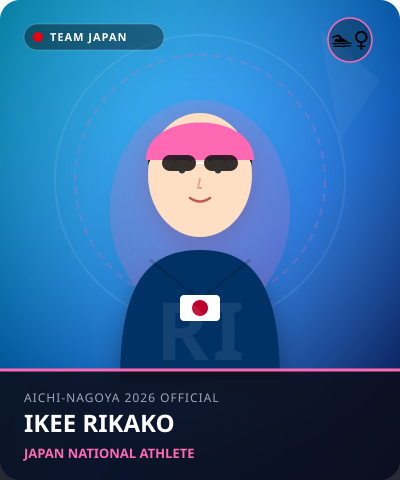

水泳
•
競泳 / 女子100mバタフライ / 50m自由形
いけえ りかこ
池江 璃花子
Rikako Ikee
🏢 所属: 横浜ゴム / ルネサンス
🏅 ジャカルタ2018アジア大会6冠・MVP🏅 パリ五輪日本代表🏅 日本記録保持者
不屈の闘志で世界へ挑み続ける日本のヒロイン。再びアジアの舞台で輝きを放つ
経歴・これまでの歩み
3歳で水泳を始め、中学時代から全国記録を連発。高校生で出場した2016年リオ五輪で7種目に出場。2018年ジャカルタアジア大会では6個の金メダルと2個の銀メダルを獲得し、大会最優秀選手（MVP）に選出された。2019年に白血病を公表するも、過酷な闘病を克服して東京五輪・パリ五輪と2大会連続五輪出場を果たす。
主要大会ハイライト戦績
2024年
パリオリンピック
女子100mバタフライ準決勝進出 / リレー出場
2023年
杭州アジア大会
50mバタフライ 銅メダル / リレー銀メダル
2021年
東京オリンピック
400mメドレーリレー等の日本代表
2018年
ジャカルタアジア大会
前人未到の6冠達成 & 大会MVP
プレイスタイル＆世界を制する武器
水をとらえる卓越した感覚と、大きなストロークで滑るように進む泳ぎが持ち味。特にバタフライでの滑らかなうねりと、勝負どころで見せるスタートからの爆発力は健在。
愛知・名古屋2026への決意とメッセージ
大会スケジュール＆観戦のツボ
🗓️ 出場予定日程・会場
2026年9月20日〜25日（名古屋市総合体育館 レインボープール特設）
👀 観戦の注目ポイント
腕のかきとキックの絶妙な連動、ターンの鋭さ。そしてタッチの瞬間に見せる魂のこもったスプリント力。